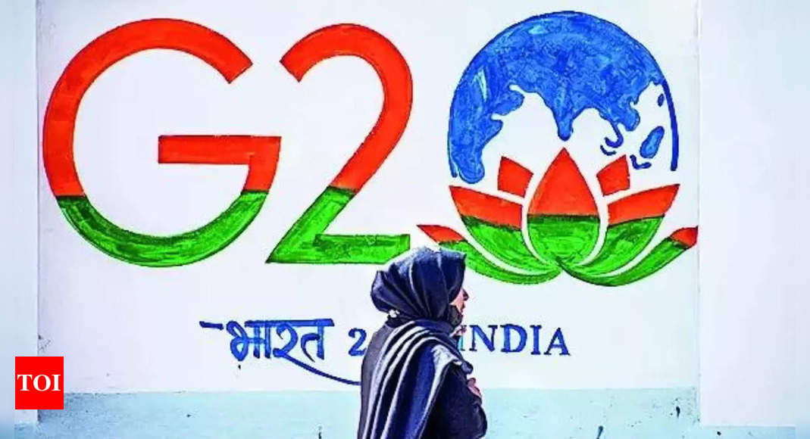

India eyes joint G20 communique in September
Image Credits https://m.timesofindia.com/business/india-business/india-eyes-joint-g20-communique-in-september/articleshow/101770673.cms
Times of India
India is actively working towards the formation of a joint communiqué among the G20 nations to address global challenges and promote economic recovery. The G20 summit is scheduled to take place in September. The Indian government is keen to ensure that all member countries work together to tackle pressing issues such as the COVID-19 pandemic, climate change, and economic revitalization.
The G20, which represents 80% of the world's economic output and two-thirds of the global population, plays a crucial role in global economic governance. India recognizes the significance of multilateral cooperation, especially amidst a global crisis, and aims to facilitate a coordinated response and consensus among the G20 countries.
Prime Minister Narendra Modi has been actively engaging with world leaders to build support for a joint communique that reflects the shared concerns and priorities of the G20 nations. The Indian government believes that a collective response from the G20 will carry greater weight and make a significant impact in addressing global challenges.
The four key pillars that India intends to focus on within the joint communique are:
- Global Health: India aims to strengthen global health systems and achieve equitable access to vaccines, medicines, and diagnostics. The country has been at the forefront of providing COVID-19 vaccines to other nations through its "Vaccine Maitri" initiative.
- Climate Action: India is committed to climate change mitigation and adaptation efforts. The government plans to promote sustainable development, renewable energy, and climate resilience.
- Trade and Investment: India seeks to enhance global trade and investment flows by ensuring fair and open markets. It aims to address issues related to trade imbalances, market access, and WTO reforms.
- Digital Transformation: India recognizes the importance of digital technologies in driving economic growth and development. The government aims to foster digital inclusivity, data privacy, and cybersecurity.
India's active pursuit of a joint G20 communique aligns with its vision of a "New India" that actively engages in shaping global discourse and finding solutions to common challenges. By emphasizing the importance of collective action and cooperation, India aims to foster inclusive growth and sustainable development for all.
Curated by Team Akash.Mittal.Blog
Share on Twitter Share on LinkedIn